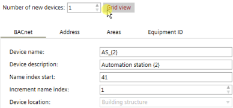

添加多个设备
您可以通过智能复制和粘贴添加多个设备。您需要 Microsoft Excel 来执行智能复制和粘贴。

如果手动添加 IP 地址，请设置DHCPcolumn in Excel toFALSE.
Add devices
- A building structure is defined.
- In Building > Building structure, right-click a building or building element and select Add devices.
- The Add devices window opens.
- Select a device
- Click Next.
- Select Grid view.

- Click Smart copy.
- The data has been copied to the clipboard.
- Open Microsoft Excel.
- Paste the date in a Microsoft Excel worksheet.
- Add more devices using copy and paste in the worksheet, and edit the values.
- Select the whole table including the headline.
- Go to the Add devices window, and click Smart paste.